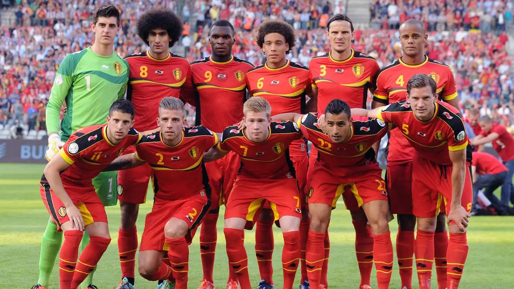

A seleção da Bélgica chegou a participar de seis edições seguidas da Copa do Mundo (entre 1982 a 2002). Na Eurocopa, o campeonato europeu de seleções, a Bélgica foi vice-campeã do torneio em 1980 e terceiro lugar em 1972.
1° vez em terceiro lugar (2018).
1° vez em quarto lugar (1986).
| Data/Hora | Estádio | Adversário |
|---|---|---|
| 23 nov 2022 / 16h00 | Estádio Ahmed bin Ali | Canadá |
| 27 nov 2022 / 10h00 | Estádio Al Thumama | Marrocos |
| 1º dez 2022 / 12h00 | Estádio Ahmed bin Ali | Croácia |